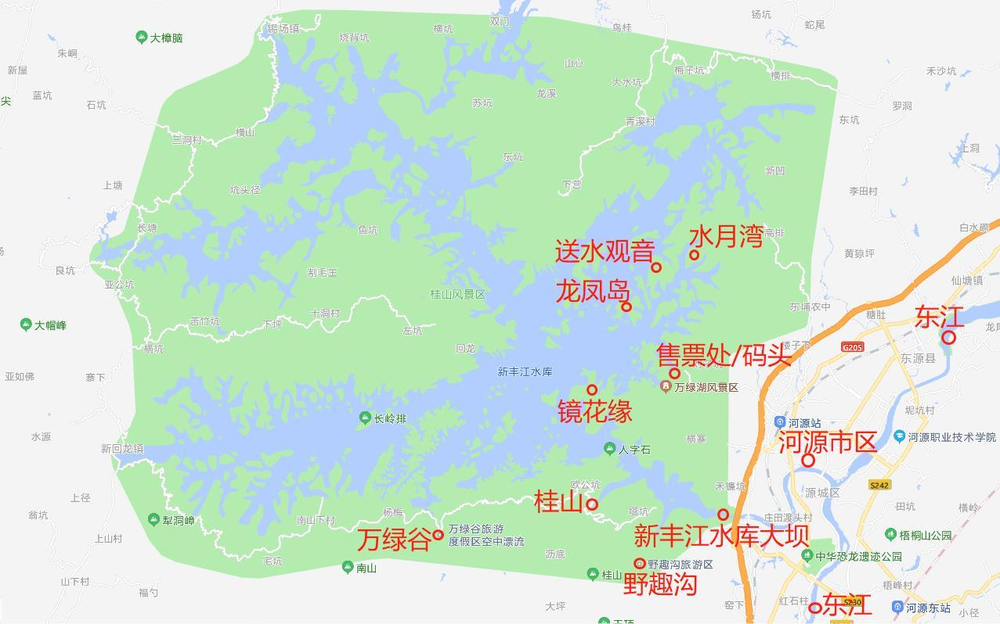
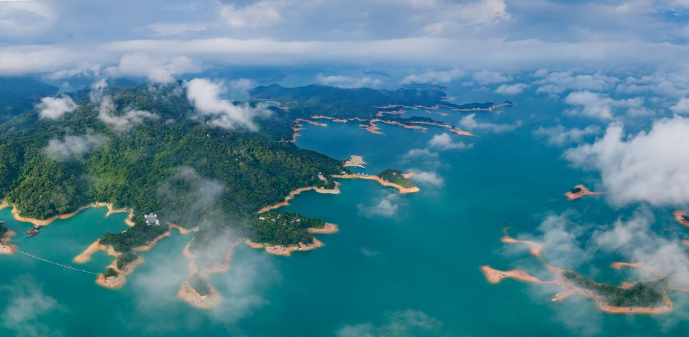

万绿湖风景区
万绿湖，位于广东省河源市东源县，距河源市区8公里，是粤港澳大湾区后花园，因处处是绿，四季皆绿而得名。万绿湖水域面积宽370平方公里，蓄水量约139亿立方米，有360多个绿色岛屿，是广东省和华南第一大湖。
万绿湖在蓝天、白云、朝霞夕阳映衬下，青山延绵，碧水浩淼，峰峦叠秀，飞瀑扬波，松涛拍岸，鸟语蝉鸣，纯真静谥，天然野趣，展现出一幅迷人画卷，如镜花水月般的人间仙境。
万绿湖少有风浪，水色秀美绝伦。湖水颜色随太阳照射角度和光线不同而迥异，或墨绿、或深绿、或浅绿，像人工创造的绿宝石，被誉为“天上瑶池水，人间万绿湖”。
